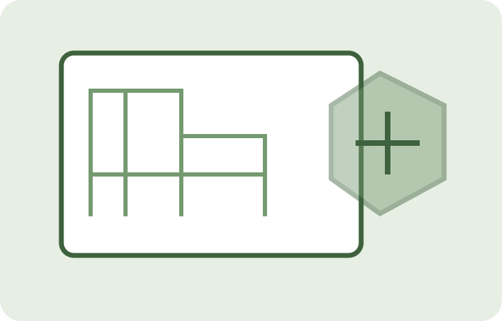
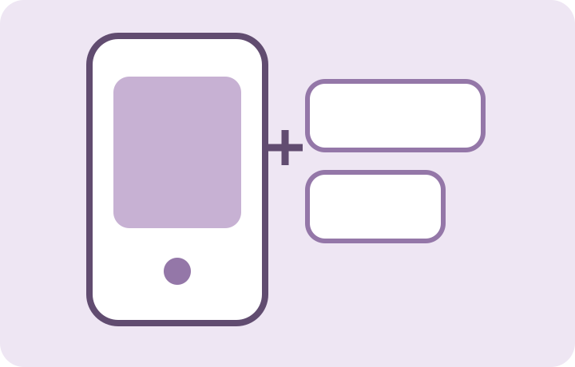

바로 사용FREE
무료 웹도구
계산·PDF·이미지·문서 작업을 설치 없이 바로 실행합니다.
도구 센터 바로가기 →FACTORY ONE · DIGITAL TOOLBOX
무료 웹도구, 업무용 프로그램, AutoCAD LISP, 모바일 앱까지.
일상과 업무에서 반복되는 불편을 더 빠르고 간단하게 해결합니다.
필요한 서비스를 선택해보세요
계산·PDF·이미지·문서 작업을 설치 없이 바로 실행합니다.
도구 센터 바로가기 →반복 업무를 줄이고 실제 작업에 도움이 되는 유틸리티를 확인합니다.
프로그램 센터 바로가기 →
반복되는 도면 작업을 빠르게 처리하는 LISP 도구를 모았습니다.
LISP 센터 바로가기 →
현장과 일상에서 바로 사용할 수 있는 Factory One 앱을 소개합니다.
앱 센터 바로가기 →설치 없이 가볍게 즐길 수 있는 게임 공간입니다.
게임 센터 바로가기 →